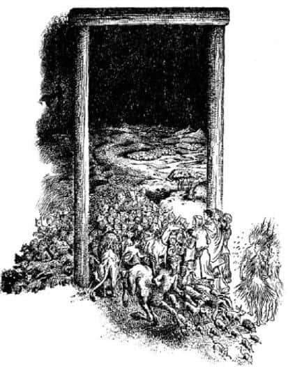
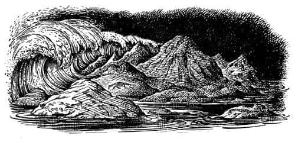
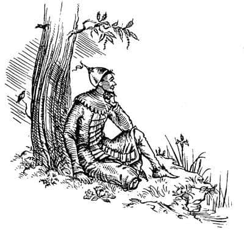

Narnia’ya Akşam Çöküyor
Hepsi Aslan’ın sağ yanında durup açık kapıdan dışarıya baktı. Ateş sönmüştü. Yeryüzü karanlığa bürünmüştü; ağaçların karartılarının bitip de yıldızların başladığı yer görünmeseydi eğer, bir ormanda olduğunuzu anlayamazdınız. Aslan tekrar kükrediğinde dışarıda, sol taraflarında başka bir karartı belirdi; yıldızların olmadığı yerde bir şekil vardı. Şekil giderek yükseldi, devlerin en büyüğü kadar büyük bir insan şekline dönüştü. Hepsi de onun nerede durduğunu anlayabilecek kadar iyi tanıyordu Narnia’yı. Kuzeyde, Şıpırtı Nehri’nin ötesinde uzanan yüksek ve çıplak arazide olmalıydı. Jill ve Eustace, uzun zaman önce o arazinin altında, derinlerdeki mağaralarda muhteşem büyüklükte bir dev gördüklerini, isminin Zamanbaba olduğunu ve dünyanın sonu geldiğinde uyanacağının söylendiğini hatırladılar.
“Evet” dedi Aslan, konuşmamalarına rağmen. “Rüya görürken ismi Zaman’dı. Artık uyandığına göre yeni bir ismi olacak.”
Sonra dev, ağzına bir boru yaklaştırdı. Yıldızların önündeki karartının hareketlerinden bunu görebiliyorlardı. Bundan sonra - ses ışıktan daha yavaş ilerlediği için - borunun sesini duydular. Ses tiz ve ürkütücüydü ama aynı zamanda tuhaf bir güzelliği vardı.
Gökyüzünde yıldızlar kayıyordu. Sadece bir yıldızı kayarken izlemek bile çok güzeldir; bunlar düzinelerceydi, daha sonra yüzlerce yıldız kaydı ve bu, bir gümüş yağmuruna dönüşene dek devam etti. Sonra içlerinden bir ya da ikisi, gökyüzünde devin dışında başka bir karartı daha gördüğünü düşünmeye başladı. Ama farklı bir yerdeydi, tam tepede, gökyüzünün çatısında diyebilirdiniz. “Belki bir buluttur” diye düşünüyordu Edmund. Her neyse, orada hiç yıldız yoktu; sadece karanlıktı. Sonra o karartı, yıldızsız ve karanlık gökyüzünün ortasında gittikçe yayılarak büyümeye başladı. Az sonra gökyüzünün dörtte biri, sonra yarısı kapkara oldu ve en sonunda yıldız yağmuru sadece alçaklarda, ufkun yakınlarında devam etmeye başladı.
Heyecan ve şaşkınlık içinde (biraz da dehşetle) neler olduğunu anladılar. Yayılan karanlığın nedeni bulut değil; boşluktu. Gökyüzünün karanlık bölümü, yıldızların kalmadığı bölümdü. Tüm yıldızlar düşüyordu: Aslan onları eve çağırmıştı.
Yıldız yağmuru sona ermeden önceki birkaç saniye çok heyecan vericiydi. Yıldızlar etraflarına düşmeye başlamıştı. O dünyadaki yıldızlar bizim dünyamızdaki gibi büyük ateşten toplar değildir. Onlar insandır (Edmund ve Lucy bir zamanlar onlardan biriyle tanışmıştı). Alevden gümüş saçları, akkor mızraklarıyla bir yağmur gibi üstlerine yağıyordu bu insanlar; pırıl pırıl parıldayan yıldızlar kapkara gökyüzünden meteorlardan bile daha büyük bir hızla düşüyorlardı. Yere inip otları yakarken ıslığa benzer bir ses çıkarıyorlardı. Tüm bu yıldızlar kayarak yanlarından geçiyor, arkalarında, sağ tarafa yakın bir yere iniyorlardı.
Yıldızların yakına inmesi büyük bir avantajdı, aksi takdirde gökyüzünde yıldız kalmadığından her şey tamamıyla karanlıkta kalacak ve hiçbir şey göremeyeceklerdi. Oysa şimdi arkalarındaki yıldız kalabalığı şiddetli ve beyaz bir ışık yayıyordu. Önlerinde uzanan Narnia ormanlarının millerce ilerisi projektörle aydınlatılmış gibiydi. Neredeyse her çalının, her otun gölgesini görebiliyorlardı. Yaprakların kenarları bile öylesine net görülüyordu ki, insan dokunsa parmağını keseceğini düşünüyordu.
Önlerindeki çimenlikte kendi gölgeleri vardı. Ama en muhteşemi Aslan’ınkiydi. Koskocamandı ve korkunç bir şekilde sollarına doğru uzanıyordu. Tüm bunlar bundan böyle sonsuza kadar yıldızsız kalacak bir gökyüzünün altında yaşanıyordu.
Arkalarından gelen ışık o kadar güçlüydü ki, kuzeydeki çıplak arazinin yamaçlarını bile aydınlatıyordu. Orada hareket eden bir şeyler vardı. Kocaman hayvanlar sürünüp kayarak Narnia’ya geliyordu; iri ejderhalar, dev kertenkeleler ve yarasa kanatlı tüysüz kuşlardı bunlar. Ormanın içine girerek kayboldular ve birkaç dakikalık bir sessizlik yaşandı. Sonra - ilk önce çok uzaklardan - feryat sesleri, daha sonra da her yönden hışırtılar, patırtılar ve kanat sesleri duyuldu. Sesler giderek yaklaştı. Çok geçmeden küçük ayakların pıtırtısı, büyük pençelerin yumuşak seslerinden; küçük ve hafif toynakların tıkırtısı, büyük toynakların çıkardığı gökgürültüsüne benzer seslerden ayırt edilebiliyordu. Sonra binlerce parıldayan göz görüldü. En sonunda ormanın karanlığından, canlarını kurtarmak için yokuş yukarı koşan binlerce, hatta milyonlarca yaratık - konuşan hayvanlar, cüceler, satirler, faunlar, devler, Calormenliler, Archenlandliler, Tekayaklar ve uzak adalardan ya da batıdaki bilinmeyen adalardan, bu dünyaya ait değilmiş gibi görünen garip yaratıklar - çıktı. Tüm yaratıklar Aslan’ın durduğu kapıya doğru koştu.
Maceranın bu bölümü, rüyaya benziyordu ve hatırlaması epey zordu. Ne kadar sürdüğünü söylemek çok güçtü. Bazen sadece birkaç dakika, bazen de yıllarca sürmüş gibi görünüyordu. Açıkça anlaşılıyordu ki, kapı büyümedikçe ya da yaratıklar tatarcık kadar küçülmedikçe bu kalabalık o kapıdan geçemezdi. Ama kimse bunları düşünmüyordu.

Yaratıklar yıldızlara yaklaştıkça gözleri daha da parlıyordu ve daha hızlı koşuyorlardı. Aslan’ın yanına yaklaştıklarında bir şeyler oluyordu. Hepsi dimdik onun yüzüne bakıyordu; başka seçenekleri olduğunu sanmıyorum. Bazılarının yüz ifadesi inanılmaz bir biçimde değişiyordu - korku ve nefret ifadesiydi bu; sadece konuşan ayıların yüzlerindeki ifade saniyenin binde biri kadar sürmüş, sonra eski halini almıştı. Artık konuşan hayvanlar olmadıkları belliydi; artık sıradan hayvanlardı. Aslan’a bakan tüm yaratıklar sağa, yani Aslan’ın soluna doğru gidiyor ve (bildiğiniz gibi) kapının sol tarafına doğru uzanan o kocaman gölgede kayboluyorlardı. Çocuklar onları bir daha görmedi. Onlara ne olduğunu ben de bilmiyorum. Diğerleri Aslan’ın yüzüne bakıyor; bazıları korkuyor ama yine de hepsi onu seviyordu. Tüm yaratıklar Aslan’ın sağındaki kapıdan içeriye giriyordu. Aralarında bazı garip yaratıklar da vardı. Eustace atların vurulmasına yardım eden cücelerden birisini bile gördü. Ama bu tür şeyleri düşünecek zamanı yoktu (zaten onu ilgilendirmiyordu), çünkü büyük bir sevinç kafasındaki diğer düşüncelerin uçup gitmesine neden olmuştu. Tirian ve dostlarının çevresini saran mutlu yaratıklar arasında, öldüğünü sandığı herkes vardı: Sentor Bilge, Cevher, Yabandomuzu, Ayı, Kartal Keskingöz, sevgili köpekler, atlar ve Cüce Zıpır oradaydı.
“Yukarılara ve içerilere!” diye bağırdı Bilge ve şimşek gibi batıya doğru koşmaya başladı. Diğerleri onu anlamamıştı, ama duydukları, ürpermelerine neden oldu. Yabandomuzu neşeyle onlara doğru bakıp homurdanıyordu. Ayı, hiçbir şey anlamadığını mırıldanacaktı ki arkalarındaki meyve ağaçlarını gördü. Son hızla ağaçlara doğru yürüdü ve orada, belli ki hoşuna giden bir şey buldu. Köpekler kuyruklarını sallayarak orada kaldı, Zıpır herkesle el sıkıştı. Cevher kar beyazı başını Kral’ın omzuna eğdi, Kral Cevher’in kulağına bir şeyler fısıldadı. Sonra herkes dikkatini kapıdakilere yöneltti.
Narnia, ejderhalara ve dev kertenkelelere kalmıştı. Sağa sola giderek ağaçları yerlerinden söküyor, bunları küçük fidanlarmış gibi çatır çutur kırıyorlardı. Orman her geçen dakika yok oluyordu. Tüm arazi çırılçıplaktı, daha önce fark etmediğiniz küçük girinti ve çıkıntılar görünmeye başlamıştı. Çimler kurumuştu. Tirian çok geçmeden karşısında çıplak kayalarla çorak topraklardan başka hiçbir şey kalmadığını fark etti. Narnia’yı bu halde görünce, bir zamanlar orada hayat olduğuna inanmak çok zordu. Canavarlar yaşlanıp öldü. Etleri kuruyup buruştu ve kemikleri çıktı; çok geçmeden hepsi, sanki binlerce yıl önce ölmüş gibi, ortalıktaki ölü kayaların üzerinde yatan kocaman iskeletlere dönüştüler. Uzunca bir süre her şey sakin kaldı.

Sonunda beyaz bir şey - yıldızların ışığında parlayan, uzun ve yatay bir beyazlık - dünyanın doğu ucundan onlara doğru yaklaşmaya başladı. Her yerden duyulabilen bir ses, sessizliği deldi; önce bir mırıltı, sonra gürültü ve sonunda bir gümbürtü duyuldu. Artık gelen şeyleri ve hızlarını görebiliyorlardı. Bu köpükten bir su duvarıydı. Deniz yükseliyordu. Bu ağaçsız dünyada her şey çok iyi görülüyordu. Nehirlerin, göllerin genişlediğini, birçok gölün tek bir gölde birleştiğini, vadilerin yeni göller oluşturduğunu, tepelerin adalara dönüştüğünü, sonra da o adaların yutulup yok olduğunu görebiliyordunuz. Sollarındaki yüksek arazilerle sağlarındaki yüksek dağlar parçalanarak, gümbürtü ve şapırtılarla yükselen sulara daldı ve su girdaplar halinde kapının eşiğine kadar geldi, ama kapıyı geçmedi, köpükler Aslan’ın ayaklarını ıslatmıştı. Artık her yer suyla kaplıydı.
Hava aydınlanmaya başladı. Ufuk boyunca felaket habercisi kasvetli bir şafak söküyordu, ortalık gitgide aydınlandı, arkalarındaki yıldızları bile fark edemez oldular. Sonunda güneş doğdu. Lord Digory ve Leydi Polly birbirlerine bakıp hafifçe başlarını salladılar; bir zamanlar başka bir dünyada ölen bir güneş görmüş olduklarından, bu güneşin de ölmekte olduğunu hemen anlamışlardı. Olması gerektiğinden üç kat - belki de yirmi kat - daha büyüktü ve alışılmadık bir kızıllığı vardı. Işıkları büyük Zamanbaba’nın üstüne düştüğünde o da kırmızıya büründü; hiçbir kıyıya ulaşmayan sular, o güneşin ışığında kan gibi görünüyordu.
Sonra ay doğdu; yanlış bir yerden doğuyordu. Güneşe çok yakındı ve kırmızı görünüyordu. Ay görününce, güneş ona doğru, yılanlara ya da uçuşan sakallara benzeyen kıpkırmızı ateşten büyük alev parçaları göndermeye başladı. Ayı kendine doğru çekmeye çalışan bir ahtapot gibiydi güneş. Belki de çekmişti. Her neyse, ay önce usulca yaklaştı, sonra giderek hızlandı; ardından alevler onu yalamaya başladı ve ikisi birleşip kor parçasına benzeyen kocaman bir topa dönüştüler. Denize büyük ateş parçaları düşmeye başladı ve buhar bulutları yükseldi.
Aslan, “Artık bitir” dedi.
Dev, borusunu denize fırlattı. Sonra güneşe ulaşıncaya kadar uzattı kolunu - kolu simsiyahtı ve binlerce mil uzunluğundaymış gibi görünüyordu. Güneşi tutup, portakal sıkar gibi sıktı. Her yer bir anda karanlığa gömüldü.
Aslan hariç herkes, kapıdan gelen soğuk havadan kaçmak için geriye çekildi. Kapının kenarları şimdiden buzlarla kaplanmıştı.
“Narnia’nın Yüce Kralı Peter” dedi Aslan, “kapıyı kapat.”
Peter soğuktan titreyerek dışarıya uzandı ve kapıyı çekti. Çekerken, kapının kenarındaki buzları kırmıştı. Sonra beceriksizce (çünkü elleri bir anda morarmış ve hissizleşmişti) altın bir anahtar çıkarıp kapıyı kilitledi.
O kapının arkasında gördükleri şeylere çok şaşırmışlardı. Ama şimdi, etraflarına bakıp da, ılık gün ışığını, üstlerindeki masmavi göğü, ayaklarının altındaki çiçekleri ve Aslan’ın yüzündeki gülümsemeyi gördüklerinde daha da şaşırdılar.
Aslan hızla döndü, çömelir gibi yaptı, kuyruğuyla kendine vurdu ve altın bir ok gibi fırladı.
“Daha içerilere gelin! Daha yükseklere çıkın!” diye bağırdı başını çevirerek. Bu hızla onu kim takip edebilirdi ki? Hepsi Aslan’ın peşinden batıya doğru yola çıktı.
“Böylece” dedi Peter, “Narnia’ya akşam çöktü. Haydi, Lucy! Ağlamıyorsun, değil mi? Aslan ileride ve hepimiz burada onunla birlikteyken bu yaptığın da iş mi?”
“Beni durdurmaya çalışma Peter” dedi Lucy. “Eminim Aslan engellemezdi. Eminim Narnia için yas tutmak kötü bir şey değildir. Şu kapının ardında donarak ölenleri düşün.”
“Evet” dedi Jill, “ben bu güzelliklerin sonsuza kadar devam edeceğini umuyordum. Bizim dünyamızın bir sonu olduğunu biliyordum, ama Narnia’nın sonsuza kadar yaşayacağını sanmıştım.”
“Ben başlangıcını gördüm” dedi Lord Digory. “Sonu da görecek kadar yaşayacağımı düşünmemiştim.”
“Baylar” dedi Tirian. “Bayanlar ağlamakla iyi ediyor. Görüyorsunuz ki ben de ağlıyorum. Annemin ölümünü gördüm. Narnia’dan başka bir dünya bilmiyordum ki. Yas tutmasaydık, bu büyük bir saygısızlık olurdu.”
Hayali ahırda salkım üzüm gibi dipdibe oturan cücelerden ve kapıdan uzaklaştılar. Yürürken eski savaşlardan, barışlardan, krallardan ve Narnia’nın görkeminden konuşuyorlardı.
Köpekler hâlâ yanlarındaydı. Çok fazla olmasa da konuşmalara katılıyorlardı, çünkü ileri geri koşturmakla ve hızla uzaklaşıp aksırana kadar otları koklamakla meşguldüler. Aniden onları çok heyecanlandıran bir koku aldılar. Hep beraber tartışmaya başladılar. “Evet o - hayır değil - ben de bunu söylemiştim - bunun ne olduğunu herkes anlayabilir - o büyük burnunu kenara çek de başkaları da koklasın.”
“Kuzenler, nedir o?” dedi Peter.
“Bir Calormenli efendim” dedi köpekler hep bir ağızdan.
“Öyleyse bizi ona götürün” dedi Peter. “Dost da olsa düşman da olsa hoş karşılarız.”
Köpekler ileriye fırladı, az sonra, sanki yaşamları buna bağlıymış gibi koşup, gördüklerinin gerçekten bir Calormenli olduğunu söylemek için havlayarak geri döndüler. (Konuşan köpekler, aynı sıradan köpekler gibi yaptıkları şeyin çok önemli olduğunu düşünüyormuş gibi davranırlar.)
Diğerleri köpekleri takip etti ve berrak bir derenin yanında, bir kestane ağacının altında oturan genç Calormenli’yi buldular. Bu Emeth’ti. Hemen ayağa kalkıp ciddi bir selam verdi.
“Efendim” dedi Peter’e, “düşman mı dost mu olduğunuzu bilmiyorum. Ama ne olursa olsun bu bana şeref verir. Şairlerden biri, ‘En iyi armağan soylu bir dost, en iyi ikinci armağansa soylu bir düşmandır’ dememiş miydi?”
“Efendim” dedi Peter, “savaşmamız gerektiğini sanmıyorum.”
“Kim olduğunuzu ve başınıza gelenleri anlatın” dedi Jill.
“Hikâye anlatılacaksa oturup bir şeyler içelim” diye havladı köpekler. “Soluk soluğa kaldık.”
“Sağa sola koşturup durursanız tabii ki soluk soluğa kalırsınız” dedi Eustace.
İnsanlar çimlere oturdu. Köpeklerse, gürültüyle dereden su içtikten sonra nefes nefese, dimdik ve dilleri sarkmış bir halde hikâyeyi dinlemek üzere oturdular. Cevher boynuzunu karnına sürterek parlatmakta olduğu için ayakta kaldı.
